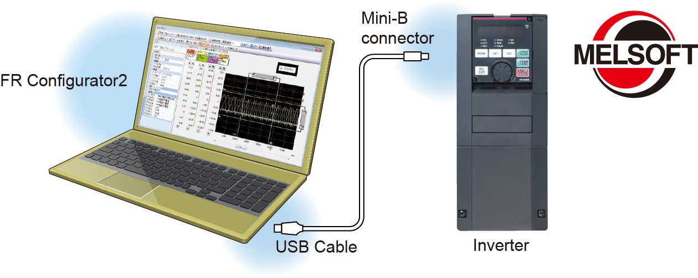

Seri Inverters-FREQROL FR-A800 MUDAH DISESUAIKAN & MUDAH DIGUNAKAN

PENYIAPAN MUDAH & MUDAH DIGUNAKAN
Berbagai peralatan dan fungsi telah disiapkan yang memungkinkan
pekerjaan dapat dilakukan di mana saja sesuai dengan siklus hidup produk.
Dilengkapi sepenuhnya dengan berbagai fungsi dan peralatan sederhana untuk meningkatkan efisiensi kerja.
Memperlancar proses startup
Menyalin parameter dengan memori USBBARU
Konektor host USB (tipe A), yang memungkinkan koneksi perangkat eksternal, telah ditambahkan. Parameter dapat disalin ke perangkat memori USB komersial.
Pengaturan mudah dengan Perangkat Lunak Pengaturan Inverter (FR Configurator2)
- Ini adalah perangkat lunak yang mudah digunakan dan memiliki kesatuan dengan produk Mitsubishi Electric FA dengan desain umum MELSOFT dan pengoperasian yang baik.
- Koneksi plug-and-play yang mudah ke terminal USB yang dilengkapi sebagai standar
- Versi uji coba gratis, yang berisi fungsi start-up, tersedia. Versi ini dapat diunduh di Situs Web Global Mitsubishi Electric FA.
Pengkabelan mudah ke sirkuit kontrol BARU
Terminal penjepit pegas telah diadopsi untuk terminal sirkuit kontrol.
Kabel dapat dilindungi dari kendur akibat getaran selama pengangkutan inverter. Sepuluh terminal tambahan digunakan dibandingkan dengan seri FR-A700. Terminal penjepit bundar juga dapat digunakan dengan menggunakan opsi terminal kontrol (FR-A8TR).
Tampilan yang mudah dipahami meningkatkan pengoperasian
Pengoperasian yang mudah dengan GOTBARU
- Komunikasi otomatis dapat dilakukan tanpa menentukan pengaturan parameter apa pun, cukup dengan menghubungkannya ke seri GOT2000.
- Monitor perangkat fungsi PLC dapat ditampilkan di seri GOT2000.
Kontrol batch beberapa monitor perangkat inverter dapat dilakukan dengan satu unit GOT. - Contoh data layar untuk A800 dapat ditemukan di perangkat lunak desain layar seri GOT2000. Versi terbaru perangkat lunak desain layar dapat diunduh dari Situs Web Global Mitsubishi Electric FA.
Konfigurasi parameter yang mudah diikutiBARU
Salah satu mode yang dapat dipilih oleh panel operasi adalah mode parameter Grup, yang menyediakan pengaturan parameter yang intuitif dan sederhana.
(Mode pengaturan parameter konvensional dipilih secara default.)
| Major division |
Nama |
|---|---|
| E | Environment |
| F | Acceleration/deceleration |
| D | Start and frequency commands |
| H | Protective function |
| M | Monitor |
| T | Multi function I/O terminal |
| C | Motor constant |
| A | Applications |
| B | Applications (position control) |
| N | Communication |
| G | Control |
Panel operasi yang mudah dibacaBARU
Panel operasi (FR-DU08) menggunakan layar 5 digit, 12 segmen untuk tampilan karakter yang lebih alami. Selain itu, panel operasi LCD opsional (FR-LU08) yang menggunakan panel LCD yang mampu menampilkan teks dan menu juga tersedia.
Untuk membantu perawatan
Mengurangi waktu pemeriksaan kabel
Penutup tipe terpisah disesuaikan untuk semua model kapasitas.
Perawatan kini mudah karena yang perlu dilakukan operator hanyalah melepas penutup untuk area kabel yang dituju.
Perawatan dan kontrol beberapa inverter (Opsi) BARU
Pembacaan nomor seri dapat dilakukan menggunakan panel operasi LCD opsional (FR-LU08) atau Perangkat Lunak Pengaturan Inverter (FR Configurator2). Administrasi berbagai inverter menjadi jauh lebih mudah.